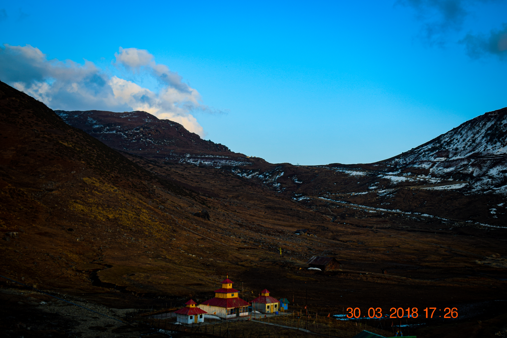

The beautiful twilight of Rishikhola still captures my imagination every evening at home.The beautiful river on the stones and the hills like the walls all around and the gentle touch of nature eveywhere.
Its the lone standing temple in the cold valley of Nthang. Nthang is very cold evening during March with night temperatures drop to -2 degree celsius. It was a thrilling and chilling experience, as one can say.

The view atop the road to Nthang had some of the wonderful wave of mountains sprawling across the horizon.

The uphill road winding through the small village of Aritar. The beautiful lake it leads to and the green mountain that cover the sight-line to the right is indeed something you will always long to get back to.

A misty morning in Sillary Gaon. I havent known heaven but if i weere to picture it, I would go with this anyday.